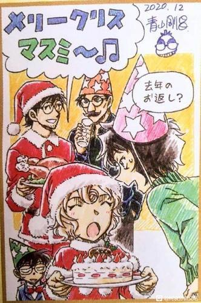
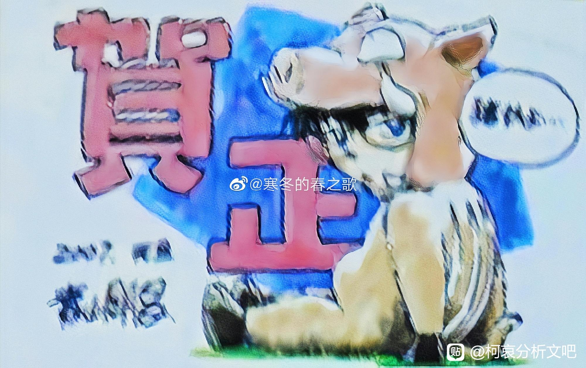
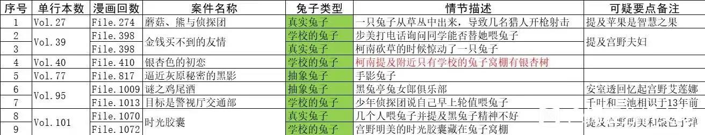
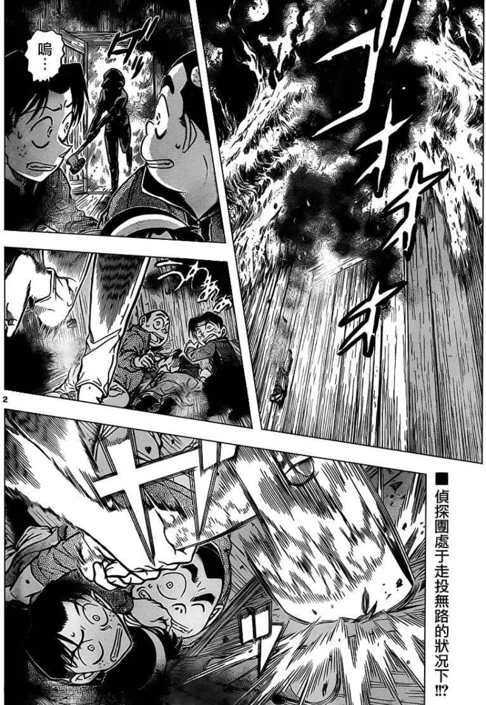
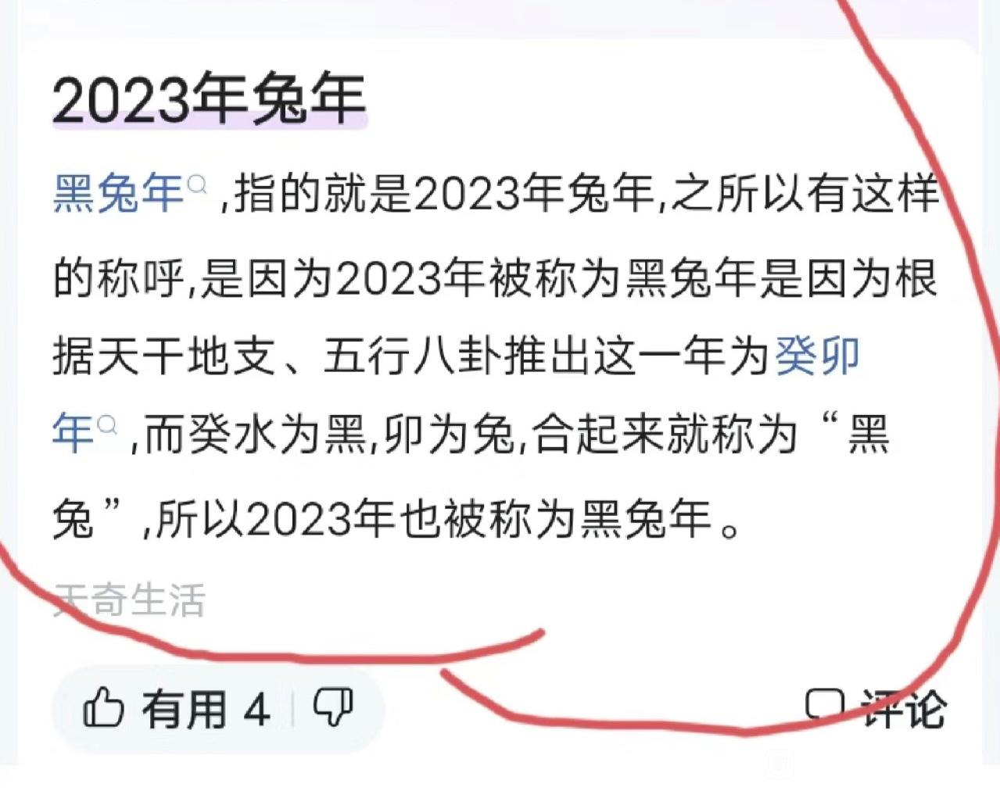

1L 2024元旦贺图和2023的两张

起因是大家连线聊天的图中，73发布了2024元旦贺图，主角是平和，后面柯南小兰cos了今年的生肖「龙」。
去年兔年，亦是73亲口认定的「灰原哀年」，贺图有两张，哀给众人敲黑板+黑组年会(乐)
去年兔年，亦是73亲口认定的「灰原哀年」，贺图有两张，哀给众人敲黑板+黑组年会(乐)
2023-12-31 12:19 | 图卢兹的幽灵:途中...2023-12-31 13:39 | 图卢兹的幽灵:去年2023的图细思极恐，分析在27楼2024-01-01 00:35 | 贴吧用户_GCEDyXK:我以为，后面是柯南和光彦。。。。我还在疑惑为啥是光彦呢2024-01-02 00:17 | Durant🌌:回复 贴吧用户_GCEDyXK :真是光彦的话这身高差也太恐怖了2024-01-02 00:28 | 贴吧用户_GCEDyXK:回复 Durant🌌 :身高确实没想到，就看着脸有点像，这个角也没那么明显

再往前的虎年、牛年、鼠年、猪年，每年都是当年剧场版的主角+柯兰cos当年生肖 (鼠和牛一下子没翻到全图不好意思，截个my way老师的总结
今天龙年的贺图一出，突出了2023兔年的【特殊】：没让柯兰cos生肖 (甚至没有兰)，也没有讲兔子，而是小哀大声强调的「ワタシ」
今天龙年的贺图一出，突出了2023兔年的【特殊】：没让柯兰cos生肖 (甚至没有兰)，也没有讲兔子，而是小哀大声强调的「ワタシ」
2023-12-31 12:45 | 150XXXX0800:不管什么造型，角都好抢镜2023-12-31 13:40 | 贝尔格里尔斯AI:回复 图卢兹的幽灵 :还挺萌的2024-01-01 11:23 | 柚子232323:越看越感觉飘康乃馨的味儿2024-01-02 04:42 | Carr▫:小兰画的还挺可爱的2024-01-02 08:35 | 白石🌐:这几张小兰确实还挺可爱的2024-02-21 00:46 | 贴吧用户_GGG1SNP:莫名可爱是怎么回事
想起因幡白兔传说了
为什么小柯生肖装扮都是一脸不爽的样子
2023-12-31 21:06 | 夜空蓝蓝:可能是太幼稚了不想搞这个（大概是那种社牛家长奇装异服陪i人小朋友参加幼儿园亲子日 的感觉）2024-01-01 01:54 | top许佳琪-:我也发现了2024-01-01 02:09 | 洛菲斯♬:牛的生肖好像还好，可能特别喜欢牛2024-01-01 02:31 | 希尔瓦纳斯2:有偶像包袱是这样的2024-01-01 09:02 | 黑麦🌋🌌:漫画里双胞胎那个案件结尾有说过柯南很不乐意穿这种衣服2024-01-01 09:14 | 图卢兹的幽灵:回复 黑麦🌋🌌 :懂了，年年还要被某人强迫cosplay，要我我也不爽(2024-01-12 11:31 | 贴吧用户_Gtb9AXK:不想陪小兰玩2024-01-21 01:20 | LoganF🌙:回复 夜空蓝蓝 :你确定，这小子和小哀三小打雪仗放风筝时候分段融入可是相当完美2024-01-21 23:38 | moon_salena:回复 LoganF🌙 :分段融入是什么意思？2024-01-22 01:07 | LoganF🌙:回复 moon_salena :成功化为小学生2024-01-27 01:44 | 顽皮鬼才:回复 夜空蓝蓝 :不太可能。最大的可能就是不喜欢跟mll穿一样的衣服
之前就有吧友提到过，少侦柯哀碰到的案件多次有「兔」、迫近的黑影就是兔子的剪影、时间胶囊兔子食欲不振、黑兔亭透子回忆艾莲娜等等。小哀、宫野家和「兔」这个意象强关联的伏笔。
每年贺图都是同样套路，唯独兔年不一样，直接让灰原哀=兔，73的这个设计可谓暗线缱绻。
73本人属兔。
每年贺图都是同样套路，唯独兔年不一样，直接让灰原哀=兔，73的这个设计可谓暗线缱绻。
73本人属兔。
2023-12-31 14:48 | 瑀珊0209:73本人🟰哀2023-12-31 19:38 | 战略性协调伙伴:这样子，那银杏色的初恋那就有意思了耶2023-12-31 23:34 | 贴吧用户_01E859Q:回复 瑀珊0209 :所以他和高山南？对前妻一直念念不忘2023-12-31 23:59 | 永恒加菲:还有林中小屋那个（列车篇前夕，宫野志保登场），那个受害人（柯）被摄影师男友（哀）砍死的那个案子，受害人最后的手势就是兔子（哀），柯子还在共情受害人时把头扭过去看月亮。2024-01-01 05:43 | 林深现时鹿🌿:沃日 细啊老哥2024-01-01 08:14 | 野性虚情假意:我就说当时时光胶囊为啥要特写兔子，原来一切都有迹可循2024-01-01 11:52 | 棒棒糖鸭ºvº:还有蜘蛛公馆结尾的时候那个老奶奶说要给双胞胎姐妹讲的睡前故事是因幡之白兔，感觉也有深意诶2024-01-01 11:58 | BLACK-X:回复 永恒加菲 :楼主说的迫近的黑影就是这个。2024-01-02 02:33 | NCC74656Voyage:回复 永恒加菲 :卧槽，哀不就是月亮吗？？？（指m26中唱到我就是月亮时，给哀怼脸镜头）2024-01-02 02:34 | NCC74656Voyage:你前面说的内容，我觉得看看就好。但你说青山属兔，我？？？一下子就信了！2024-01-02 10:47 | 好看就行🌝:诶嘿嘿2024-01-04 07:44 | 婧er倪:本人也是兔，23年本命年啊
回复 NCC74656Voyage :！！如果有你在2024-01-11 06:17 | Angel哀ლ:回复 NCC74656Voyage :好家伙，月亮和兔子2024-01-19 07:17 | 怪盗基德WYH994:这两个意象在中国就是紧紧联系的
食欲不振，那集好像小哀也是被之前的海猿岛吓得不轻
这一段也一直被系统。。

2024-01-02 01:30 | 宛如季风:2024-01-02 04:45 | Carr▫:不会73是给这个小动物过生日才放的蛋糕吧………
回复 宛如季风 :目前看来大概率是了，不过楼主分析的宫野家＝兔这个意象我认为还是很靠谱的，圣诞哀生日还是可以期待一波的2024-01-02 14:55 | 冴木弓弦🍦:回复 Carr▫ :那得看其他小动物过生日的时候73有没有放蛋糕2024-01-04 00:15 | 花与水º:回复 宛如季风 :应该不会，动森小动物过生日在他们自己家有摆设，没必要在玩家的家再摆一个生日蛋糕，还摆在哀的家里而不是柯南或小兰的房子里。2024-01-11 22:28 | RE-Zero:这还得看月兔是哪年出来的，或者说是哪代动森出来的，如果是初代N64的版本，还有可能（01年），如果是后续出的，只能说是巧合……或者是73觉得她是兔子又和哀像，才让她入岛？2024-01-12 01:22 | 边村长是小牛肉:《逐二兔者，不得一兔》暗示很明显了

我裂开了，发啥都说我引流
最爱的人的形状是兔子

2023-12-31 12:39 | 拧发条的鸟BT:我c，我的神2023-12-31 13:42 | waighty:南塔天2023-12-31 18:47 | 贴吧用户_aMRNKb7:又是满月2023-12-31 19:41 | 战略性协调伙伴:所以满月是团圆？2023-12-31 21:10 | 天道轮回之境:神，刚圣2023-12-31 21:30 | 小杰奇犽999:卧槽，难他天？2023-12-31 22:13 | 沽酒莫辞贫💨:卧槽2023-12-31 22:16 | 魔法少女九月✨:卧槽2023-12-31 22:32 | 贴吧用户_aZQb9A8:卧槽2023-12-31 22:35 | 随意♬飘荡:天才2023-12-31 23:27 | Leo_Bayern:难他天2024-01-01 00:58 | 贴吧用户_QMDPeSR:根本难不倒他2024-01-01 01:55 | top许佳琪-:南塔天？2024-01-01 01:58 | 冰点🌙:好好好2024-01-01 02:10 | 恩好:好好好2024-01-01 02:22 | 赤赤爱吃猪-:南塔天2024-01-01 02:47 | Four🔯:南塔天？2024-01-01 03:09 | e恶魔光环e:我草，难道他真的是天才2024-01-01 03:36 | go勿忘凉凉:2024-01-01 04:55 | 贴吧用户_5N451RG:王德发
难他天？！2024-01-01 05:30 | 中子星◆:我服了，我服了。饭太多我吃不过来了2024-01-01 05:45 | 林深现时鹿🌿:难道他真是天才2024-01-01 06:51 | 贴吧用户_GWJG66e:握草难他天2024-01-01 07:07 | 🍁傻敷敷的小颜:青山你快画啊啊啊啊啊啊啊啊啊2024-01-01 07:10 | 轻绘梨樱💞:难道他真的是天才？2024-01-01 07:21 | 名字想了半天呢:柯哀真是越扒越有2024-01-01 13:16 | 非吔-:难他天2024-01-01 23:10 | 未知数次方:天呐2024-01-01 23:17 | 皟宋簚刍蹌换:啊？啊？啊！2024-01-02 01:13 | 贴吧用户_G2aU385:挖槽2024-01-02 03:20 | 宫千代塔落:蛙趣2024-01-02 06:07 | 杭电球迷:厉害2024-01-02 06:16 | 草莓味o🎀:卧槽2024-01-02 08:53 | 进击的Z11:天才！2024-01-02 09:28 | 简_新月:卧槽2024-01-02 10:57 | ◆Camus:难他天？？？？？？2024-01-02 19:35 | 白化の黑化雪:刚圣2024-01-03 01:15 | 贴吧用户_G7DNV8M:2024-01-03 04:56 | 游艺猎人😾:就说这篇是难得的柯志同框肯定藏了东西！2024-01-03 15:40 | 贴吧用户_0QebN4U:刚圣！！！2024-01-04 09:15 | 贴吧用户_GyDKV46:我草！2024-01-07 19:05 | 贴吧用户_QREGCyK:难道他真的是天才？2024-01-09 01:49 | 贴吧用户_G3GQa7W:好好好2024-01-09 02:23 | 勾陈◎:难他天？2024-01-09 05:33 | 熙xixxi:难他天？2024-01-11 04:11 | 贴吧用户_aP619EZ:难他天？。2024-01-11 06:30 | 2JINS🔥:难他天 刚圣2024-01-12 03:23 | -isuzu:刚门（2024-01-12 03:34 | 迪迪巴巴💕:刚圣2024-01-12 15:09 | 贴吧用户_aS3aVUX:2024-01-13 22:36 | SparkFeeling:难道他真的是天才2024-01-16 22:40 | 夏朵诺布尔:卧槽！天才2024-01-27 03:03 | 贴吧用户_aQS5M9X:好好好2024-01-28 00:43 | 沐颜R🌱:回复 游艺猎人😾 :这也跟侦探的镇魂歌里面的新兰月下逢对比吧，73真的早期名场面都要往柯哀身上套2024-02-20 22:58 | 粟夕米米米米米:难他天？？2024-02-21 00:48 | 贴吧用户_GGG1SNP:绝了


2024第一天，开个槟先
2023-12-31 21:47 | 殇殇小天使:干杯！
「月兔」生日12月25日，上周圣诞刚在博士屋子和波洛放了一堆生日蛋糕。
日文ルナ则是红叶乘坐的航空公司的名字。
座右铭“逐二兔者，不得一兔”(映射出轨研究专家？
这里简单说明一下这个游戏这些角色的机制：主角(我们)可以通过出岛探险或者搭建帐篷来碰到各种各样的小动物，碰到谁是随机的(好像有300多个且每个都有名字性格生日等设定)然后可以邀请他们来自己岛上住，上限10个小动物。虽说是随机的，但只要自己有毅力和机票，是可以按照自己喜好去刷、来控制自己的岛屿构成。
日文ルナ则是红叶乘坐的航空公司的名字。
座右铭“逐二兔者，不得一兔”(映射出轨研究专家？
这里简单说明一下这个游戏这些角色的机制：主角(我们)可以通过出岛探险或者搭建帐篷来碰到各种各样的小动物，碰到谁是随机的(好像有300多个且每个都有名字性格生日等设定)然后可以邀请他们来自己岛上住，上限10个小动物。虽说是随机的，但只要自己有毅力和机票，是可以按照自己喜好去刷、来控制自己的岛屿构成。
2023-12-31 14:24 | 丶飞小霜⛄:成为偶像。。。。。有过说法是灰原结局后不搞研究了去做大明星2023-12-31 14:49 | 瑀珊0209:回复 丶飞小霜⛄ :动森里的女性小动物好多梦想都是成为偶像，这个倒不用分析了。2023-12-31 21:01 | 封一你妹一啊:2024-01-01 00:52 | sherry12灰原:嗨巴拉的生日不会真的跟南英分析的一样是圣诞吧2024-01-01 02:43 | 贴吧用户_0Q8721R:这家航空公司在漫画中倒是出现的很早，飞天密室案就出现了，应该早于动森。2024-01-01 03:31 | 把哈哈:而且ルナ=lunar=月亮的，月亮与兔子的关联自不必说，哈利波特中卢娜的守护神也是野兔2024-01-01 20:32 | _QuKefan:还可以刷amibo邀请小动物。动森小动物是分为不同性格的，一般情况下任天堂会按比例分配小动物，也就是说如果靠自己刷的话以上小动物同时都出现的概率不大，应该刷amibo出来的2024-01-06 13:06 | ___敖_小_殇___:回复 贴吧用户_0Q8721R :动森的话也是老IP了，应该01年就有了2024-01-06 22:21 | 喵了个咪5314:回复 丶飞小霜⛄ :那柯哀完全就是优作和有希子的翻版啦2024-01-11 01:35 | 伦飒:回复 ___敖_小_殇___ :飞天密室案是98年的2024-01-20 23:55 | 莫轻语♤:也可以直接用amibo邀请小动物，没必要去小岛刷
cy，等后续
沃日，下个兔年是12年之后，不会老贼还想再拖12年吧
2023-12-31 21:04 | airxk:10年和12年也不差什么，下个兔年上映最后一部剧场版完成最终结局。不是不可能2024-01-01 08:50 | 暴走L二哥:2024-01-01 22:54 | 奥斯丁格理芬:你别说，去年才更了17话，按这个速度，真能拖12年
回复 暴走L二哥 :不会吧，23年老贼就已经60岁了，除非他想要超越海贼王的连载记录。或者高山南想要破野泽雅子年纪最大声优记录，野泽雅子好像都88碎了。2024-01-03 04:58 | 游艺猎人😾:回复 奥斯丁格理芬 :声优记录不一定，但柯南拖死海贼这一点应该是的。海贼确实已经到了最后章了。现在柯南这边朗姆篇还没最终结束（你柯还没和朗姆对决），就算朗姆篇之后就是boss篇，也得有一大堆坑要填。。。2024-01-11 19:54 | Chem_:回复 游艺猎人😾 :后面不是基德篇吗，再后面才是boss篇，海贼看着三个月内土星老登药丸然后就决战篇了2024-01-28 07:55 | lzc19960704:回复 暴走L二哥 :还得算上为了更魔快而停更的名柯
dd，预测这又是一个可以里程碑式的发现！
去年是青山60大寿，青山本人属兔
2024-01-02 19:21 | 暗雨樱哀:绝 自己60大寿专门敲定灰原哀兔年主场 有意思
补充鼠年牛年贺图，2019猪-2024龙，只有2023兔年非常不一样，灰原哀就是特殊的。


2023-12-31 13:47 | 杰物:为什么2023有两张？2024-01-01 09:26 | 瑞思拜🙈🐴:回复 杰物 :亲女儿 搞特殊化2024-01-02 04:48 | Carr▫:灰原哀年，兔年，确实灰原哀＝兔，要不我还以为为啥去年是灰原哀年呢，这么一说就合理了2024-01-06 06:57 | 贤家的鱼苗儿♀:回复 杰物 :2023连画两张新年贺都没有柯兰，就是没有的意思2024-01-11 03:35 | 林凰郡主:小柯的表情越发地像魔快黑化客串2024-01-21 23:50 | moon_salena:为啥20和21都是秀吉和由美啊？2024-01-26 22:54 | Orange毛儿七:回复 moon_salena :M24不是延迟了一年吗？只好贺图画两次都是关于赤井的。2024-03-21 00:30 | NCC74656Voyage:回复 贤家的鱼苗儿♀ :有新兰的篇章大部分都有哀的有效戏份，有柯哀的篇章那是真的没兰的有效戏份
艹，看上去很真
有点真哦，只有哀的主役被称为灰原哀年，其他的都没有说是xxxx年的。
2024-01-02 02:48 | NCC74656Voyage:事件线开始收束的元年！
兔是特别的吗，道理我都懂，但强迫症好难受啊
2024-01-02 19:40 | 白化の黑化雪:青山1963年，属兔，这样兔确实是特别的2024-01-04 07:59 | 婧er倪:回复 白化の黑化雪 :73跟我爸妈一个年纪
cy
这个有意思欸
2023年这张从右往左：今年电影的主角是我！(敲黑板 灰原哀)知道了吗？这里，会出题/要考试的哦！！
之前看只感觉，哦，又把小哀往狂躁去画，行吧。
今天再看，结合贺图、M26、文吧各种发现(Miss Glass. Sherry is answer等等)突然觉感觉寒毛都竖起来了。73可能真的是在给观众出题，布一盘大局。
我、灰原哀，就是题。
对大侦探而言，是他搞不懂的女人心；
对观众而言，则是整个故事的谜题与答案。
之前看只感觉，哦，又把小哀往狂躁去画，行吧。
今天再看，结合贺图、M26、文吧各种发现(Miss Glass. Sherry is answer等等)突然觉感觉寒毛都竖起来了。73可能真的是在给观众出题，布一盘大局。
我、灰原哀，就是题。
对大侦探而言，是他搞不懂的女人心；
对观众而言，则是整个故事的谜题与答案。
2023-12-31 21:12 | 天道轮回之境:刚圣2024-01-01 11:11 | 森德芮拉:我去 厉害2024-01-01 22:40 | bearaven:要不咋说国内宣发所以提前1年透题开卷考都要刻意不及格呢2024-01-01 23:03 | 奥斯丁格理芬:可惜啊！这个是老贼希望自己有的发型，可是现实确实阿笠博士的发型。2024-01-04 08:00 | 婧er倪:回复 奥斯丁格理芬 :笑死2024-01-05 02:12 | 贴吧用户_QJEQJ16:南塔天2024-01-12 03:36 | 迪迪巴巴💕:厉害
修学漫改后年年都是柯兰扮生肖，只有去年是例外。
前两次兔年，11年和99年。
2023-12-31 13:52 | 图卢兹的幽灵:11年这个，像是伦敦篇“你去对草地女王说”的那一幕啊2023-12-31 13:58 | 图卢兹的幽灵:2011：“兔子”看穿了一切！(这说的是啥(笑))←图中全部文字2023-12-31 17:17 | 平者深黑:确实是伦敦篇啊。2011年初，时间上是伦敦篇之后的第一个新年；飞舞的纸条和默示录那话的封面也很像2023-12-31 18:53 | ifbyoru365:byd前两次兔年，已经拖了30年了，不会非要凑整个生肖吧2024-01-01 12:05 | 如梦初醒2610:最后的一张图，看位置关系，平次的角度是正好能看到和叶的，但是和叶正好挡在柯南跟兰的那条视线上，所以感觉柯南其实在视线里更能看到的人是灰原。2024-01-11 20:03 | Chem_:回复 ifbyoru365 :生肖应该不是关键，扑克牌♦️4是，也就是27年M30大结局，或者是同时期TV来结局
不过去年两张有一种说法是，往年是新年+圣诞贺卡，去年并成了两张贺年卡。18192021都是圣诞贺卡与新年贺卡独立，但偏偏去年没有圣诞“贺卡”，每年却有圣诞哀，可能确实有点说法。

2023-12-31 14:01 | 队了里个队😂:不过今年好像也没圣诞贺卡2023-12-31 19:45 | 战略性协调伙伴:回复 队了里个队😂 :有！是哀酱戴着眼镜的圣诞贺卡！2023-12-31 21:08 | 宽待人严律己🌹:今年有圣诞哀，并不是圣诞+新年合在一起2023-12-31 22:27 | 贴吧用户_0aatU9A:回复 宽待人严律己🌹 :圣诞哀和圣诞贺卡是两码事2023-12-31 22:56 | 宽待人严律己🌹:回复 贴吧用户_0aatU9A :我发现我理解错了层主说的了，她说的是圣诞贺卡，22年和23年确实都没有2023-12-31 23:58 | 队了里个队😂:回复 战略性协调伙伴 :不是不是，那那不是贺卡，贺卡是上面签绘的这种2024-01-01 02:56 | 悠琪咕咕咕:回复 队了里个队😂 :柯南怎么总是这个表情哈哈哈哈
97到04

剩下的我之前只能找到05、07、10、17、18，都是cos生肖。


2024-01-03 18:51 | 轶鸭:。。。和叶那种好萌2024-01-09 01:54 | 贴吧用户_ayaV6WM:和叶好好看
灰原还是青山，不会属兔子吧
2023-12-31 15:17 | 南英的茶馆:青山1963年，属兔。2023-12-31 19:58 | 綾波♬哀:回复 南英的茶馆 :捉2024-01-02 07:11 | 贴吧用户_5XS7Jbt:回复 南英的茶馆 :捉2024-01-04 09:17 | 贴吧用户_7R6ARZy:回复 南英的茶馆 :捉2024-03-26 08:51 | DEATHRUG1:回复 南英的茶馆 :捉
原本是担心月兔和辉夜姬（离开人间）相关的BE意向结合，但经过深黑大佬提醒应该是【月兔捣鼓长生药】和【A药】联系起来，于是查了一下网上对「月の兎」相关的描述。确实看到了比较多的不老不死药等相关的论述，通常认为日本【打年糕的兔子】的形象，最初是中国捣药的兔子演变来的。
日本では餅をつく兎のイメージがあるが、中国ではもともと杵臼で不老不死の薬をついていた。月の満ちては欠け、欠けては満ちる様子が、不老不死・再生の思想と結びつけられたのであろう。
在日本有着作饼的兔形象，原本是中国用杵和臼搗磨不老不死之药（的兔子）。月亮的圆缺变化，和不老不死以及再生的思想联系起来。
个人延申：
宫野志保 みやのしほ
其中 宫野姓氏中的【野】是后来从の转写的，原本是宮の，即某神社的xxxx，而の的古日语本就由汉字【之】，演变而来。
所以宫野志保的名字，保留【宫】的位置逆转过来是
ほし の 【宮】
星之宫→月宫
...？
合着你哀是个本体在月宫（宫野家）捣鼓解药的小兔子？
日本では餅をつく兎のイメージがあるが、中国ではもともと杵臼で不老不死の薬をついていた。月の満ちては欠け、欠けては満ちる様子が、不老不死・再生の思想と結びつけられたのであろう。
在日本有着作饼的兔形象，原本是中国用杵和臼搗磨不老不死之药（的兔子）。月亮的圆缺变化，和不老不死以及再生的思想联系起来。
个人延申：
宫野志保 みやのしほ
其中 宫野姓氏中的【野】是后来从の转写的，原本是宮の，即某神社的xxxx，而の的古日语本就由汉字【之】，演变而来。
所以宫野志保的名字，保留【宫】的位置逆转过来是
ほし の 【宮】
星之宫→月宫
...？
合着你哀是个本体在月宫（宫野家）捣鼓解药的小兔子？
2023-12-31 17:12 | ✨星光🌟魔女💫:月人在八月十五日满月之夜带走辉夜姬也很贴合黑衣组织抓哀，黑衣组织登场抓人的时候都有满月的意向2023-12-31 21:35 | 秋叶子◆:好萌。。。2023-12-31 22:06 | 贴吧用户_QA9a7RQ:可是哀在博士家2023-12-31 22:20 | 小骅丿:好像之前有个日本传统文化的周边里哀好像就是辉夜2023-12-31 22:53 | 羊羽弓🐑:在？还不快更2023-12-31 23:40 | 贴吧用户_01E859Q:月亮，兔子，长生药2024-01-01 00:01 | SHER🌚:好可爱的说法2024-01-01 00:03 | NatsumiSakurai:回复 小骅丿 :不，是天照大神，兰是辉夜姬2024-01-01 00:29 | huiyuan志保:回复 NatsumiSakurai :我记得有竹取小哀的呀2024-01-01 00:41 | Holt_0:细想一下，层主的推论从人物设计的角度来讲很有道理，虽然可能不是最主要的，却是相当有趣的人物萌点2024-01-01 00:53 | 饼干和熊:小兔子感觉更可爱了2024-01-01 00:58 | sherry12灰原:哈哈哈哈哈哈太可爱了我哀2024-01-01 02:12 | 恩好:哀哀原来你是一只捣药的兔子宝宝2024-01-01 03:05 | 小骅丿:回复 NatsumiSakurai :好的，我不太了解这个，原来如此2024-01-01 03:43 | go勿忘凉凉:2024-01-01 05:48 | 梦紫冰蝶:可爱捏，独自在月宫中捣药的兔子哀哀2024-01-01 07:23 | 韩家大掌柜:兔子这个意象，可以跟月亮、辉夜姬、不老不死药等相联系，确实挺有说法
最后一句好可爱啊2024-01-01 10:04 | 柒月居◆柒玖:大佬有没有兴趣展开讲一期2024-01-02 00:39 | olieya:这个解读太萌了，戳中我萌点了2024-01-02 07:12 | 贴吧用户_5XS7Jbt:大佬快做期视频讲讲2024-01-02 10:45 | 夜行蚁:白兔捣药成，问言与谁餐2024-01-02 10:49 | 贴吧用户_a2EaaCS:南英我的神，求你了快更视频2024-01-02 19:33 | ✨赊月买酒:vocal2024-01-02 19:33 | ✨赊月买酒:vocal2024-01-02 20:00 | 王道球球:小兔子哀更可爱了呢，好想抱怀里摸一下2024-01-03 05:54 | 羽沫sky:啊啊啊救命！！太可爱了！！！受不了了2024-01-03 08:48 | 贴吧用户_5NKP9W2:速速更新2024-01-06 17:30 | 雾崎😷:速速出视频2024-01-12 03:42 | 迪迪巴巴💕:所以灰原是玉兔捣药的小兔子咯2024-02-15 07:53 | 彗星星🌟🌙🌞🌻:回复 王道球球 :柯南共情受害人也有说抱抱的意思


又要形成一套完整的新的论点了吗 有点真啊兄弟们
哈哈 有意思
cycy，等更
太牛了
我的观点
兔子 月兔 不死药
鲨鱼 人鱼 人鱼肉
雪 富士山顶 不死药
银杏 活化石
兔子 月兔 不死药
鲨鱼 人鱼 人鱼肉
雪 富士山顶 不死药
银杏 活化石
2023-12-31 21:10 | 封一你妹一啊:


倒不如说青山自己一直在避免兰哀同框，连贺图都不想画一起。
2024-01-01 01:48 | 冴木弓弦🍦:这倒关系不大吧，73自己要求画兰爱kiss2024-01-01 03:14 | 贴吧用户_7t3PMVG:回复 冴木弓弦🍦 :不是顺便给🦜剧本改了一笔吗？原剧本是🦜出的啊。2024-01-01 03:25 | 冴木弓弦🍦:回复 贴吧用户_7t3PMVG :是啊，但这跟我说的也不冲突，黑鱼册子里73标注了兰哀cut让他来画2024-01-01 06:22 | Yao_CPT:回复 贴吧用户_7t3PMVG :這種炸裂的事情只有青山能決定，都是大綱決定好才給櫻井寫的劇本2024-01-27 01:48 | 顽皮鬼才:回复 贴吧用户_Q2GyWP8 :最大的问题不是在哀身上，而是，把mll的初吻给整没了

可以

73属兔的，不想让某个进不去主线的角色穿自己生肖的衣服，人之常情嘛
把我看傻了
灰原真的是神秘小姐，生日、姓名都要推理的
2024-01-02 19:43 | 白化の黑化雪:完美符合名柯的推理恋爱喜剧不是吗
嚯，所以小哀是只小兔子？更可爱了
有点意思啊
有意思
新年新的观点神秘小姐什么时候才能揭开她的面纱
新的观点，好牛！！
这分析有点意思哇， 哀兔兔捣A药，难他天～
哀兔兔捣A药，难他天～
哀兔兔捣A药，难他天～灰原在动画的初登场也是兔年开年第一集（99年）
2024-01-01 23:43 | 开始💨吧:2024-01-02 03:13 | NCC74656Voyage:回复 酒酒酒治愈灵 :但是这个可能是“被迫的巧合”？毕竟73本身很早就想让哀酱出场了2024-01-02 08:07 | 酒酒酒治愈灵:回复 NCC74656Voyage :确实 只能说真的都很巧了hhhhh。73:巧了嘛这不是
难道他真的是天才……难道吧友真的是天才……
两只兔子吧……白兔是柯南，黑兔是哀……
众所周知，巧合多了就不是巧合了，是有意为之
2023-12-31 22:05 | 1412704013B:烂解：只能是巧合，只能是！
另外一件有趣的事，百变小樱里象征月亮的人间体，雪兔，生日是12.25。不知道是巧合还是圣诞，月亮，兔子，三者之间在日本文化里有联系。
时间胶囊里两只兔子，新来的黑兔子和已经有了的白兔子。前面其实已经找过白兔因幡和柯南的关系，而黑兔子是灰原哀，如果按照月之兔算得话……青山大概柯哀对称强迫症又犯了。
2024-01-09 05:56 | 白化の黑化雪:
有意思太有意思了这是里程碑一样的发现啊
找到月亮和圣诞节的关系了。
2024-01-02 03:15 | NCC74656Voyage:大佬能开个帖子翻译一下吗？2024-01-02 05:55 | 知己恋人柯哀:回复 NCC74656Voyage :不是大佬啦。就是1968.12.25阿波罗8号是在月球轨道上。然后日本国内的学术杂志出版社翻译“月亮上有圣诞老人。”2024-01-02 05:56 | 知己恋人柯哀:回复 知己恋人柯哀 :那个杂志用来搜集超自然现象的，就翻译成“月亮上有圣诞老人”2024-01-02 05:57 | NCC74656Voyage:回复 知己恋人柯哀 :谢谢！
还有高手？真的是天才
文吧速度
NB
cy
cy
之前在水楼提起过的两次兔梗

2024-01-01 01:19 | 平者深黑:关于我为什么说乌丸是太阳：乌鸦本身就跟太阳有关（金乌/八咫乌），再加个“丸”（日之丸），指向太阳很明显
哀代表着青山本人没错了。青山属兔，真第一集里就是至始至终，比工藤出场都早，就宛如在表达这部剧志保开局，志保结局，能有这种象征表达的不就是“作者”本人吗（笑）。
还有青山表达的宁茶论就是铁证，灰原是宁宁的定位，青山说过他祖上就是宁宁的亲戚，青山大哥是科学家，弟弟是医生。在整个名柯中科学家+医生的还能有谁？不就是宫野一家。
还有青山表达的宁茶论就是铁证，灰原是宁宁的定位，青山说过他祖上就是宁宁的亲戚，青山大哥是科学家，弟弟是医生。在整个名柯中科学家+医生的还能有谁？不就是宫野一家。
2023-12-31 22:51 | 森宫奈奈🌀:而且青山喜欢高山南老师，正好如果他对应哀的话2023-12-31 23:11 | 贴吧用户_a3NRU5N:回复 森宫奈奈🌀 :是的，这些全部都能连的起来。2024-01-01 23:45 | 开始💨吧:志始志终2024-01-09 05:59 | 白化の黑化雪:回复 森宫奈奈🌀 :柯（南姐）口中说出来的“爱人的形状是兔子（青山）”

有点意思，被说服了
cy
最可爱的兔子🐇
按十二生肖来算，如果哀属兔的话，推算下来宫野厚司是不是也有可能是属兔的？
在安室透的回忆里，爱莲娜怀小志保三个月的时候，厚司是35岁，如果严格按生日推算年龄的话，哀跟厚司是有可能同生肖的。
（只是一种假设，毕竟柯南里好像还没有过生肖这类设定）
在安室透的回忆里，爱莲娜怀小志保三个月的时候，厚司是35岁，如果严格按生日推算年龄的话，哀跟厚司是有可能同生肖的。
（只是一种假设，毕竟柯南里好像还没有过生肖这类设定）
2024-01-01 21:36 | 莛芋蕴芯:厚司漫画形象和73本人挺像的，如果真属兔，那……
很好 这下亲女儿了
m15里面打雪仗那个地方 哀用雪捏的也是一只兔子
2024-01-02 01:52 | 冰海白月:不是m15吧，应该是tv打不过的雪人
厉害，新年新观点
补个有关月的竹取哀周
好东西
所以兰只是背景，兰的出场是为了凸现她的不在场，兰不在场的时候出现的才是主要元素。
这倒也可以解释为什么兰哀两个人那么不熟，哀的社交圈和兰的社交圈都没交集，哀宁可把兰看成明美也不愿正视这就是兰。其实只是因为主体形象和背景不能混为一谈。兰的行为和个性不会影响哀的塑造。随便换个会唱歌又内向的黄小姐或者数学好又鲁莽的紫小姐摆在那也是一样。
这倒也可以解释为什么兰哀两个人那么不熟，哀的社交圈和兰的社交圈都没交集，哀宁可把兰看成明美也不愿正视这就是兰。其实只是因为主体形象和背景不能混为一谈。兰的行为和个性不会影响哀的塑造。随便换个会唱歌又内向的黄小姐或者数学好又鲁莽的紫小姐摆在那也是一样。
上岛一趟，发现更多月兔相关。
1.博士家哀的浴室，挂着月兔肖像
1.博士家哀的浴室，挂着月兔肖像
2024-01-01 12:28 | 殊途同归🌈🌸:2024-01-01 16:43 | 冴木弓弦🍦:回复 殊途同归🌈🌸 :首先你需要一个switch主机，然后买个动森游戏卡带，买了任天堂会员就可以去逛青山小岛了2024-01-01 21:29 | 殊途同归🌈🌸:回复 冴木弓弦🍦 :2024-01-02 19:23 | 圈量子:好的，谢谢
回复 殊途同归🌈🌸 :注意别买国行，买日版美版这些能联网的2024-01-02 21:47 | 殊途同归🌈🌸:回复 圈量子 :好2024-01-03 08:21 | aoao👻:这基本属于实锤了吧，小兔子和哀绝对有关系2024-01-11 01:48 | 伦飒:回复 殊途同归🌈🌸 :ns2024-01-11 01:48 | 伦飒:回复 殊途同归🌈🌸 :别买成国行就行2024-01-12 03:12 | 离堂风▫:地摊和那个凳子（是凳子吗）都是玉桂狗看起来也很像兔子
2.你柯房子大厅(73工作室)，摆着玉兔摆件，后面墙上中间玉兔肖像。这栋楼楼上，挂着玉兔肖像。另一只是松鼠小润。
2024-01-02 16:48 | 贴吧用户_0795E8E:当务之急是研究松鼠是谁，毕竟兰的下家2024-01-04 15:29 | 范达克霍姆🌝:回复 图卢兹的幽灵 :真第一集，兰被一只松鼠cos抓住了，新一则是被一只兔子抓住了2024-01-06 17:31 | 雾崎😷:回复 范达克霍姆🌝 :细！2024-01-07 06:34 | 范达克霍姆🌝:回复 雾崎😷 :2024-01-12 03:46 | 迪迪巴巴💕:回复 范达克霍姆🌝 :厉害！2024-01-14 12:40 | lindamanda:回复 贴吧用户_0795E8E : 绫小路警官...2024-01-16 20:59 | 一颗鱼丸不要面:小润被大佬推测是秀一 https://tieba.baidu.com/p/88549019362024-01-19 07:26 | 怪盗基德WYH994:回复 范达克霍姆🌝 :无敌2024-03-21 00:39 | NCC74656Voyage:回复 贴吧用户_0795E8E :有人已经推理出来松鼠=秀一（不过我感觉你应该看到那个帖子了吧2024-03-21 03:39 | 贴吧用户_0795E8E:回复 NCC74656Voyage :不是松鼠而是tanuki
搬运茶花老师的图
23年贺卡，两个戴眼镜的兔子。
23年贺卡，两个戴眼镜的兔子。
2024-01-01 01:25 | 图卢兹的幽灵:刚圣！2024-01-01 01:25 | 彼岸Edogawa_ai:我擦2024-01-01 01:32 | 宽待人严律己🌹:回复 图卢兹的幽灵 :戴眼镜的兔子这个真的太细了，屑老头2024-01-01 01:56 | 冰点🌙:这可以说实锤了2024-01-01 02:01 | Astray℃:这个很锤2024-01-01 03:16 | 贴吧用户_7t3PMVG:刚门🙏🏻2024-01-01 03:17 | 九九玉生烟:这也太细了2024-01-01 03:45 | go勿忘凉凉:我靠2024-01-01 04:34 | 宽待人严律己🌹:兔子戴眼镜是茶花老师发现的！眼好尖！2024-01-01 05:50 | 梦紫冰蝶:后知后觉，这个近乎实锤了，细节怪！2024-01-01 05:54 | 林深现时鹿🌿:沃日 刚圣2024-01-01 07:20 | 轻绘梨樱💞:太细了2024-01-01 07:33 | 🍁傻敷敷的小颜:回复 🍁傻敷敷的小颜 :开香槟🍾🍾🍾2024-01-01 08:58 | 世界上没有真理:好強！2024-01-01 09:20 | QuantumEntangl:茶花老师是戴着放大镜看啊2024-01-01 09:39 | 🐑神楽mea:戴眼镜感觉太真了2024-01-01 09:46 | 47073842:我无话可说2024-01-02 03:40 | 宫千代塔落:几乎实锤了，我去2024-01-02 19:48 | 白化の黑化雪:刚圣，他真的是个天才2024-01-03 15:54 | 47锛坆鈥唂鈥唌:天才2024-01-04 00:31 | 贴吧用户_Q4eCR5W:坏了，真给他整明白了2024-01-05 19:30 | 贴吧用户_QMDPeSR:卧槽2024-01-12 03:47 | 迪迪巴巴💕:细2024-02-24 02:09 | 贴吧用户_GWXE2DQ:锤！
3.波洛和毛利家房子，左边房间(毛利事务所三楼生活区)，摆着玉兔摆件
4.月兔房子，外面竹林月兔、地上堆着落叶，和黑影篇真的很像

2024-01-01 05:20 | 冴木弓弦🍦:还有右边的月亮座椅
另外，提到月兔的百科，无论什么语言的，都会提到最初把月亮和兔子联系在一起的《天问》“夜光何德，死则又育？厥利维何，而顾兔在腹？”死则又育即为死而复生，与A药相关
好缱绻的分析
73埋伏笔太顶了吧友找消息也好快
吧友找消息也好快顶！！难他天？？
所以青山搞柯哀真的是寄托自己对南姐的感情？
2024-01-01 04:32 | 你离不开的wc:知乎上有这个文2024-01-01 06:35 | 乌鸦豚骨拉面💫:回复 你离不开的wc :能不能求个指路2024-01-01 08:37 | 虬空:回复 乌鸦豚骨拉面💫 :不知道是不是说的这个→https://www.zhihu.com/question/599963669/answer/3026778827?utm_id=02024-01-01 19:56 | 🍁傻敷敷的小颜:回复 乌鸦豚骨拉面💫 :是他这个👆🏻2024-01-03 01:47 | 写书的书:回复 虬空 :哇塞2024-01-07 02:14 | 贴吧用户_5EPSKyJ:回复 虬空 :这个人写的好牛2024-01-11 21:26 | 贴吧用户_QEaSKMM:网页链接2024-01-12 05:28 | 迪迪巴巴💕:所以才会只有灰原的心声却没有柯南的吧，因为青山不确定高山的心意。
还有高手
厉害
说起来，大阪城本阵里哀也是药师的形象。原先一直拿宁茶论分析，但似乎宁宁并没有做药的经历。现在看来，应该还是月兔杵药的设定。大阪夏之阵发生在1615年，也是兔年。如果名柯真的有人物要退场，那扮演真田幸村的赤井就是了（当然你也可以说他已经退场过了，之前是影武者代替了）。
所以从最初新一就
已经被🐰抓住了
命运之轮早已开始转动
这是宿命
已经被🐰抓住了
命运之轮早已开始转动
这是宿命
2024-01-01 02:27 | 突然想起你147:这里面不会是志保吧？？2024-01-01 02:27 | 北宸乄😈:对哦，这兔子突然抓过去的2024-01-01 04:07 | 贴吧用户_G7WWZEN:回复 突然想起你147 :我觉着这个时候你哀不是在研究室就是明美在一起喝茶，想不出她来游乐园穿玩偶服干什么2024-01-01 07:28 | 突然想起你147:回复 贴吧用户_G7WWZEN :在车后座偷看到了一眼，尾随？2024-01-01 09:01 | 世界上没有真理:回复 突然想起你147 :這只是個意象，更多的是象徵柯哀兩人就是宿命感十足命定之人2024-01-01 10:24 | 轻绘梨樱💞:回复 突然想起你147 :不是，是暗示2024-01-05 06:03 | PCM_X:我靠，看到你这里真的崩不住啦！！！难他天？！！2024-01-15 12:34 | 蓝色雨夜的回忆:这兔兔还穿红色的衣服2024-01-16 21:01 | 一颗鱼丸不要面:难他天！！！2024-03-21 00:43 | NCC74656Voyage:回复 PCM_X :另一边兰被松鼠抱住了。根据大佬对73的动森的研究，松鼠=秀一，秀兰错位论又来了
这下见证历史了，新的理论诞生
哇怪不得M26里是“月野兔”直接帮哀酱逃出潜水艇（瞎说的
2024-01-01 10:58 | 贴吧用户_057V96N:2024-01-01 10:58 | 贴吧用户_057V96N:2024-03-21 00:46 | NCC74656Voyage:基尔的声优吗？wtf，这也太巧了吧？不过感觉声优梗是顺便的，更重要的还是让本堂家族重回观众视线，方便后续给兰配平英佑
火钳刘明
厉害啊！！！
难他天？？？
补一下米花吧关于宫野家和兔梗的分析
宫野夫妇兔梗分析
宫野夫妇兔梗分析
新一年的新论点太酷了！！
哇塞
搬运一下茶花老师的微博，2023贺卡的兔子，为了避免麻烦ID打码了
2024-01-01 03:57 | 圈量子:73，你……我……2024-01-01 05:35 | 贴吧用户_aZQb9A8:！！！2024-01-01 05:52 | bearaven:都这样了，像索隐派一样看名柯又有什么不好呢2024-01-01 05:53 | bearaven:新年快乐，兔子先生，兔子小姐。 新年快乐，眼镜超人，眼镜小姐。2024-01-01 06:04 | 随意♬飘荡:南塔天！！！2024-01-01 07:10 | 测验的家:沃日，被73骗了一年才发觉啊，要是知道这个迷题现在才被观众发现，估计笑开花了2024-01-01 08:55 | 世界上没有真理:傻眼！青山真的.......我現在越來越期待所有伏筆被揭開的那一刻了！2024-01-02 06:58 | mangomengke07:这是动森贺卡？
我的天哪
这个分析厉害了
收藏了，考虑到剧场版都计划到m30了
期待下一个兔年？
期待下一个兔年？
2024-01-01 07:21 | 测验的家:应该不至于，大招估计是灰原哀的生日
另一方面，兰的存在似乎对任何人的塑造都无意义。
哀显示出了宫野一家人的亲情，博士的友善，小朋友们的友爱，老师们的责任感，女警们的感情世界，还有赤井、世良、安室等人对待任务的态度，甚至平次的义气和基德，都能通过与哀直接间接的互动更好的展现，还有与小五郎一起追星，包括比护和洋子的个性。
而兰呢，父母的选择与她无关，圆子、世良的个性与她无关，博士、工藤夫妻甚至平次对她只是礼貌，和叶的爱情观和行动也不受兰的影响，她不懂侦探，她认为基德只是个小偷。兰不但无法影响任何人，也没有别的角色借由与兰的互动展现出不同的内在性格。
新一除外，但是这前不着村后不着店的狗屁爱情观真的是侦探新一必不可少的属性吗？诸如孤独、不被理解、温柔、尽责等等，并不是只有新兰之间才会这样，新一与其他人的交流中也会有各种各样的优点与难处，兰没什么特别的。
哀显示出了宫野一家人的亲情，博士的友善，小朋友们的友爱，老师们的责任感，女警们的感情世界，还有赤井、世良、安室等人对待任务的态度，甚至平次的义气和基德，都能通过与哀直接间接的互动更好的展现，还有与小五郎一起追星，包括比护和洋子的个性。
而兰呢，父母的选择与她无关，圆子、世良的个性与她无关，博士、工藤夫妻甚至平次对她只是礼貌，和叶的爱情观和行动也不受兰的影响，她不懂侦探，她认为基德只是个小偷。兰不但无法影响任何人，也没有别的角色借由与兰的互动展现出不同的内在性格。
新一除外，但是这前不着村后不着店的狗屁爱情观真的是侦探新一必不可少的属性吗？诸如孤独、不被理解、温柔、尽责等等，并不是只有新兰之间才会这样，新一与其他人的交流中也会有各种各样的优点与难处，兰没什么特别的。
2024-01-01 04:05 | 图卢兹的幽灵:前不着村后不着店太精辟了2024-01-01 10:28 | Asura兔子:1000多话了，小哀从0开始得到了独一无二的亲情、友情、占有情2024-01-02 01:59 | olieya:回复 Asura兔子 :你说的丘比特，感觉给灰原兔梗又加了个证据。那个因幡的白兔，让我感觉兔子就像红娘，就是丘比特嘛，然后柯哀一起撮合了那么多情侣……还真是兔子红娘哦2024-01-11 20:54 | 未松君:小兰……衬托出新一情绪稳定脾气好😂小时候一直这么想的🤣2024-02-01 21:01 | 雪者风形:新兰的存在是履行结构性功能的，就是维持“工藤新一”对“江户川柯南”的战略优势，确保前者杀死后者的解药线不会瞬间崩盘。新兰的崩盘势必以解药线转为解除冻龄为前置/结果，因为这同时意味着局面转变成“江户川柯南”埋葬“工藤新一”。
难他天
那么，哀的生日难道是，1975.12.25?
这个推论有点意思
天才！见证历史
申精！！！视频化！
是个很有意思的观点，但有一个问题，由于绯色的子弹延迟一年上映，所以所有剧场版都往后推了一年，按计划说m26应该是去年2022年上映感觉有点站不住脚？
感觉有点站不住脚？2024-01-01 05:24 | nusuaihxi:不要在意，元旦贺图都是当年画的，青山可以做调整2024-01-01 05:46 | 山田储金:我觉得这个不一定，因为延期上映是20年年初决定的，青山话语权足够大让m26的故事往前挪一年也不是不可能。事实上m26也是20年开始写剧本的2024-01-01 08:14 | 🍁傻敷敷的小颜:但是m26剧本还没开始写，也许本来m27的点子应该是22年上印，也没人知道2024-01-01 22:21 | 队友thet☞:剧场版时间这个挺经不起推算的，m20访谈就有消息说m25是组织剧场版，后来不知道为啥延到了m262024-02-18 08:49 | 即将02的废物月:有猜测是和27置换位置了2024-02-18 08:50 | 即将02的废物月:原本应该是红桃系列最后一部的m27因为疫情原因和m26置换位置，这何尝不是一种错位，至此已成艺术，刚门🙏2024-02-18 08:59 | 贴吧用户_5CeUQV5:剧场版都是提前几年做准备，如果26必须23年上映，哪可能27源计划22年上映，只是都往后推了一年，但26坚决不能动所以27推两年24年上映，前后不影响，可能原计划先解决和平然后着手柯哀。
我的天
难他天？
好有意思
神贴 顶中顶
神中神。期待有大佬视频化
参考那张2023年的贺卡，73竟然把所有观众骗了一年，等到今年刚刚过去有人才发现这个线索，而设计这个陷阱的犯人73早就逃之夭夭了
2024-01-01 08:58 | 图卢兹的幽灵:也正是因为到了2024，前后都端上来一对比才能锤出2023兔年的特别。总之，刚圣

小柯好可爱啊
如果猜测是真的，就像漫画里说的一样，青山知道在海的另一边还有人读得懂他应该很高兴吧
2024-01-04 00:34 | 贴吧用户_Q4eCR5W:不知道有没有能搬分析文吧的内容到对面去，听说对面都是悲观派，来吧里逛一圈不知道还剩几个
有意思
刚圣！难他天？！
新年第一天就有好活
爱兔论横空出世！
您是天才
柯哀有您了不起
希望可以见证这一天的到来
顶顶！
如果推断真的，73知道有人能破解他给出的案件，那一定挺高兴的，不知道岛国那边有没有像咱们这得这种分析。
2024-01-02 19:53 | 白化の黑化雪:这个可以问一下南室
难道他真的是天才
cy
最哈人的是基本锤了。。
为这个结论摸了一张。
2024-01-01 23:35 | 皟宋簚刍蹌换:可爱捏2024-01-02 01:28 | 岩仔呦◆:可爱捏2024-01-02 01:30 | 贴吧用户_G11aNX4:已经期待视频了2024-01-02 04:15 | 彼岸Edogawa_ai:萌死了2024-01-02 07:18 | 贴吧用户_5XS7Jbt:太可爱了2024-01-21 00:49 | SNOW哀醬:厉害了～好可爱～2024-01-24 21:51 | coffee丨仔丶:卧槽大师球
我草
兔子论复活了
兔子论复活了
刚圣！
这就是我最爱看的文吧
我的天呐。。
我又乐观了  青山快出结局吧受不了了我还能活到完结吗
青山快出结局吧受不了了我还能活到完结吗
青山快出结局吧受不了了我还能活到完结吗2024-01-04 09:30 | 贴吧用户_7R6ARZy:当然可以，灰原哀年之后，青山没准写柯哀已经写上头了，然后就盼着大结局的时候给我们所有人一个惊喜呢2024-01-06 22:43 | 喵了个咪5314:我更担心73老爷子的身体，他可千万千万要长寿哇
好极了
cy
是我大文吧才有的贴啊！
cy！！！！！
我靠神贴留名
天才天呐 火钳刘明hhhh
神中神
刚刚在b站看了个视频，是tv打不过的雪人，不知道是不是原创，但是哀堆的第一个雪人是兔子，然后又对了熊，狗和猫
2024-01-02 02:52 | 🍁傻敷敷的小颜:打不破的雪人是漫改，里面提到水无怜奈，灰原看着柯南滑雪然后拍手漫画都有，兔子就要去查查了2024-01-02 07:26 | 冰海白月:回复 🍁傻敷敷的小颜 :噢噢，可以研究一下2024-01-05 01:54 | 贴吧用户_0Q8721R:回复 🍁傻敷敷的小颜 :漫画没有堆雪人
好呀，新年的鼓劲也好足！
2024-01-02 02:53 | 74yuanf:好好好
刚来就能看见文吧最新科研成果，幸福啊
这样的话，这个可真有意思了，真第一集里兰和工藤各自都被动物抱了，兔子象征着志保的话，那兰的另一半难道是松鼠的象征。这个和基德抽牌抽的工藤背后真正的隐藏牌是方片四（宫野志保），还有红桃背后隐藏牌青山没亮，连起来有异曲同工之妙嘿。
。这个和基德抽牌抽的工藤背后真正的隐藏牌是方片四（宫野志保），还有红桃背后隐藏牌青山没亮，连起来有异曲同工之妙嘿。
2024-01-02 03:50 | 宫千代塔落:哪位大佬分析一下名柯里哪个男性角色有松鼠象征，突然好奇兰的另一半2024-01-02 04:35 | 征服de臣下:回复 宫千代塔落 :新一纽约篇给兰变过松鼠魔术，然后就是警官绫小路2024-01-02 04:49 | 宫千代塔落:回复 征服de臣下 :2024-01-02 08:23 | 贴吧用户_aZQb9A8:有点离谱
松鼠....绫小路文麿？2024-01-02 08:42 | su_millet:回复 宫千代塔落 :虽然但是，第一个联想到的是胁田兼则的牙2024-01-02 08:52 | 贴吧用户_a3NRU5N:回复 贴吧用户_aZQb9A8 :你别说，绫小路警官第一次漫画正剧出场还就是新兰的红修篇，不知道有什么关联2024-01-02 10:49 | 贴吧用户_0795E8E:已经像姐姐了就安排秀一接盘吧2024-01-02 19:01 | 图卢兹的幽灵:别说，绫小路警官的声优是置鲇龙太郎，冲矢昴也是...绫小路M7早于冲矢昴的出现2024-01-03 04:10 | 宫千代塔落:回复 征服de臣下 :刚看了隔壁关于“纽约篇”“情感错位”的贴，漫画最后新一手里捧着松鼠，兰看起来很喜欢。嗯。。。。兰喜欢的不会是贝姐和秀一结合体吧2024-01-19 07:37 | 怪盗基德WYH994:回复 贴吧用户_0795E8E :也不是不行2024-01-27 02:05 | 顽皮鬼才:回复 su_millet :2024-02-24 12:30 | 贴吧用户_JSMUayt:刚看完康辉，你给我来这个
回复 宫千代塔落 :已经有大佬分析出来了。好像青山的动物之森里有一只松鼠，而那只松鼠像。。。赤井2024-03-21 00:50 | NCC74656Voyage:文吧有动森分析文，松鼠=秀一，这下又闭环到秀兰错位论了
虽然我觉得用兔子论分析跟柯哀会不会成有点牵强了。
不过可以肯定的是兔子确实是象征小哀和宫野一家，漫画里有蠻多暗示的。
列车篇的前一个章节，也就是志保现身的章节，用了一个很大的格子画“小心有蛇”的警告牌，众所周知兔子怕蛇，蛇可能就是暗示黑衣组织逼近，而小哀最后吃药变成志保救孩子们，下一话柯南就比出了兔子的手影，暗示兔子=志保。
不过可以肯定的是兔子确实是象征小哀和宫野一家，漫画里有蠻多暗示的。
列车篇的前一个章节，也就是志保现身的章节，用了一个很大的格子画“小心有蛇”的警告牌，众所周知兔子怕蛇，蛇可能就是暗示黑衣组织逼近，而小哀最后吃药变成志保救孩子们，下一话柯南就比出了兔子的手影，暗示兔子=志保。

2024-01-02 04:16 | 202098◆:应该扯不到柯哀会不会成，是个人物萌点，哈哈哈2024-01-02 04:27 | 咖啡小館:回复 202098◆ :确实萌萌的，宫野一家象征捣制仙药的兔子，小哀就是兔子所生的小兔子，再加上小哀经常因组织受到惊吓、到处躲藏，简直太贴了
列车篇也多次暗喻列车=铁蛇，而志保就像是在蛇腹中挣扎逃窜的兔子。
2024-01-02 06:12 | 瑞思拜🙈🐴:太细了！2024-01-02 08:09 | 酒酒酒治愈灵:呜呜 可怜的小哀兔兔
查了下因幡白兔的故事，感觉主要分为两段：
开头是白兔为了渡海，挑衅鲨鱼说鲨鱼没兔子多，让鲨鱼排成一列连到对岸，它从背上跳过去一个个数，在快上岸的时候嘲笑鲨鱼结果被剥了皮；
后面是八十神教被剥皮的白兔错误的疗法让它更痛苦，大国主教它正确的疗法治好了它，它便祝福大国主姻缘幸福。
如果把后一段看作引申组织和柯南的话，那前一段有没有可能是初遇论的伏笔？初遇时志保欺骗了“鲨鱼”小新一，利用了他的求知欲或胜负欲，导致她之后被困在组织受“剥皮之痛”，也能解释通为什么新一不愿意回想
开头是白兔为了渡海，挑衅鲨鱼说鲨鱼没兔子多，让鲨鱼排成一列连到对岸，它从背上跳过去一个个数，在快上岸的时候嘲笑鲨鱼结果被剥了皮；
后面是八十神教被剥皮的白兔错误的疗法让它更痛苦，大国主教它正确的疗法治好了它，它便祝福大国主姻缘幸福。
如果把后一段看作引申组织和柯南的话，那前一段有没有可能是初遇论的伏笔？初遇时志保欺骗了“鲨鱼”小新一，利用了他的求知欲或胜负欲，导致她之后被困在组织受“剥皮之痛”，也能解释通为什么新一不愿意回想
今年入坑的新粉赶上直播了，好兴奋
神贴！
文吧个个都是人才
漫画里面有没有过中秋节呢，也算是兔子主场。
看了一下日本主要的兔子寓意，有爱神（因幡之白兔），自我牺牲（兔子烧死自己给帝释天吃，然后变成月兔），永生（月见节兔子做年糕，有长寿的寓意）三重意义。 想解读的话其实都可以联系起来。
焚烧自己牺牲的话，小哀遇到危险变大的两次都是在焚烧的边缘。一次在酒窖，一次在树林小屋子失火，也都是想牺牲自己的情况。
永生，研究的药就是这个。比较直白。
爱神，是牵红线的命运操控那种爱神，怎么看呢？ 目前披露剧情来看指向性不是太强，但是结局角度来看柯哀的定位确实是很命运性质的一对，即使中断也被连了起来。 现在不能下判断，属于整体前后对照性质的东西吧。
当然，73自己也属兔，兔子是独一档在编年史也看得出来。
焚烧自己牺牲的话，小哀遇到危险变大的两次都是在焚烧的边缘。一次在酒窖，一次在树林小屋子失火，也都是想牺牲自己的情况。
永生，研究的药就是这个。比较直白。
爱神，是牵红线的命运操控那种爱神，怎么看呢？ 目前披露剧情来看指向性不是太强，但是结局角度来看柯哀的定位确实是很命运性质的一对，即使中断也被连了起来。 现在不能下判断，属于整体前后对照性质的东西吧。
当然，73自己也属兔，兔子是独一档在编年史也看得出来。
2024-01-02 13:33 | 咖啡小館:我也是这么认为的！兔子论对感情线比较没有明确的对照，但是却和宫野一家有很强的关联性。 柯南比出兔子的手影+望向月亮让人联想到“月兔”，而月兔捣制仙药=宫野家研发梦幻般的神秘药物，甚至志保的现身和火场有关也可以对照宫野夫妇的实验室火灾（好刀。2024-01-02 13:43 | 咖啡小館:所以我个人猜测兔子意象会跟主线相关2024-01-02 13:48 | 贴吧用户_0795E8E:回复 咖啡小館 :对哦，爸妈被烤了2024-01-02 20:05 | bearaven:柯哀带三小只确实给警察情侣们签了好多对红线了呢2024-01-09 07:27 | 🍁傻敷敷的小颜:回复 咖啡小館 :但是青山贺年卡给两只兔子戴上眼镜就太明显了吧2024-01-09 10:16 | 咖啡小館:回复 🍁傻敷敷的小颜 :啊？ 明显什么，这跟原作感情线有什么关联？2024-01-09 11:57 | 🍁傻敷敷的小颜:回复 咖啡小館 :那两只兔子戴眼镜是青山想画吧，只有兔年不让柯兰cos只有小哀敲黑板今年是我的主场，看来也是青山想画，青山本人属兔对兔年这么反常看来也是巧合2024-01-09 12:01 | 贴吧用户_0795E8E:兔子肯定是有感情美满寓意但是在主线感情剧情上面没有特别突出的信息成份。但也不是没有。就那个兔子对周围环境比较敏感算是明示的有效信息。 至少显示对这个故乡有特别情怀。
我草难道他真是神仙吗
这才是我想看的文吧
好好好好
还有一个有趣的东西就是白兔神社，因幡之白兔延申的神社。 地理位置跟作品内志保大坑人鱼岛的地理位置蛮接近，但是没有什么指向性的东西说明就是这个地方。 不过这里有个著名的淤岐之島，据说是白兔神住的地方，岛上有个祭拜白兔神的地方。
白兔神社是祭拜爱情之神的地方，实现感情圆满的希望，同时也可以实现漂流海外的人早日归乡的愿望。 而且，这里的兔子也是医疗之神。
要素比较强，就是没什么地理指向，但是我也没认真看。
白兔神社是祭拜爱情之神的地方，实现感情圆满的希望，同时也可以实现漂流海外的人早日归乡的愿望。 而且，这里的兔子也是医疗之神。
要素比较强，就是没什么地理指向，但是我也没认真看。
2024-01-02 12:00 | 斯殿永生:希望他们在这里结缘 很美2024-01-05 16:03 | 贴吧用户_0795E8E:而且！这里是青山的老家。基本确定中心剧情就这里，参考我对结局的帖子
啊啊啊啊，这个给柯南递情书的小姑娘，信封上也有兔子啊啊啊啊啊，虽然只是ed。《侦探们的夜想曲》有没有大佬分析过这个ed啊。
2024-01-03 08:39 | 贴吧用户_QC7XaCG:之前只是觉得这小姑娘有点像小哀，没发现信封上的小兔子，但如果这只是个意象的话……如果给小哀一个兔女郎学姐的那种青春期症候群的机会，会不会就会出现这样一个来自小哀潜意识的偏感性的小妹妹？2024-01-04 16:30 | 贴吧用户_0795E8E:这个ed的歌词也很有意思
文吧！我的快乐老家
哀酱，你是一只可可爱爱的小兔子~預示了2024年平和還是不可能成功告白🤣🤣🤣
🐮
留名
越挖越多，吧友都是天才
火钳刘明
cy，难他天？！
留名
楼主或者别人有转到推特上给73看看的想法吗
楼主或者别人有转到推特上给73看看的想法吗
2024-01-21 07:41 | Angel哀ლ:最好别转，这个说过很多次了，要转也是等结局后再转2024-01-21 10:51 | 47锛坆鈥唂鈥唌:回复 Angel哀ლ :不好意思，发这个贴的时候我还是刚入坑的萌新，脑子过热2024-01-21 17:33 | Angel哀ლ:回复 47锛坆鈥唂鈥唌 :没事儿hhh
吧友都是天才！
之前那个兔子女孩的ED歌词也蛮有意思，看看说的是谁吧
仓木麻衣 - 恋に恋して
仓木麻衣 - 爱上恋爱
キミとの恋に恋をしてるだけで
我想告诉你我爱你爱的不可救药
伝えたくてもまだ
但始终没有说出口
秘密にしてるほうが幸せだから
现在还是将秘密留在心里最幸福
今は私だけのsecret love
只属于我的secret love
キミに全然兴味ない
我对你完全没有兴趣
ウソ you are my perfect guy
才怪you are my perfect guy
トキメキは隠せない
无法掩饰心中的悸动
ホントは気になって仕方ない
其实是太过在乎你而无法抑制
恋に不器用 损なstyle
不擅长恋爱 别动style
キミの前だと 别人みたい
只要在你面前 就像陌生人
谁にも言えない 秘密のまま
不能对任何人说 保守这秘密
それでもI'm alright
即使如此 I’m alright
恋の行方なんて
爱情将何去何从
谁にも わからないでしょ oh ohh
没有人 知道确切答案的吧 oh ohh
きっとこの恋ちゃんといつか叶うはず信じて
但是我仍然相信这份爱有一天一定会开花结果
まだit isn't the last chance for me
仍然 it isn’t the last chance for me
いろんなlove storyを
描绘我们 那love story
描いてる 胸の中
点点滴滴 在心中
でも理想にはほど远い
但距离梦想还是很遥远
私って わがまま
我只有 放任自己
それくらいのことわかってる
至少这些事我心中还是明白的
だけどなにかいけないの?
但是又有什么不可以的呢？
キミとの恋に恋をしてるだけで
想告诉你我只是爱你爱的不可救药
伝えたくてもまだ
但始终没有说出口
秘密にしてるほうが幸せだから
现在还是将秘密留在心里最幸福
今は私だけのsecret love
是只属于我的secret love
キミのこと想うと
每当心里面想着你
ドキドキが止まらないheart beat
就毫无缘由的心跳加速heart beat
楽しくもなるけど 不安にもなる
心中感到无限喜悦 也会感到不安
このまま臆病な 私じゃ駄目だね
如此胆怯的我一定会一事无成吧
ちょっとだけでも勇気をくだざい神様
哪怕一点点也好请上帝赐予我些许勇气
だからね もうバイバイ 今までの私に
所以就要和过去的自己 彻底的说再见
I'm here to tell my love...
I'm here to tell my love
じっと 待ってるだけじゃ何も始まらないこの先
明知道 如果从此只是一味等待什么事都不会发生
yeah it is the best chance for me
yeah it is the best chance for me
いろんなlove storyを
描绘我们 那love story
描いてる 胸の中
点点滴滴 在心中
理想まであとどれくらい?
此时距梦想不知还有多远？
私って わがまま
我仍然 放任自己
それくらいのこと许して
只有这点还是希望你原谅
独り占めにしていたい
只是一心想要将你独占
キミとの恋に恋をしてるだけで
想告诉你我只是爱你爱的不可救药
伝えたくてもまだ
但始终没有说出口
秘密にしてるほうが幸せだから
现在还是将秘密留在心里最幸福
今は私だけのsecret love
是只属于我的secret love
这里表现的是争取爱情的勇气的话，加上之前老奶奶的提示，哀是不是要主动一点了。 有点小刺激
仓木麻衣 - 恋に恋して
仓木麻衣 - 爱上恋爱
キミとの恋に恋をしてるだけで
我想告诉你我爱你爱的不可救药
伝えたくてもまだ
但始终没有说出口
秘密にしてるほうが幸せだから
现在还是将秘密留在心里最幸福
今は私だけのsecret love
只属于我的secret love
キミに全然兴味ない
我对你完全没有兴趣
ウソ you are my perfect guy
才怪you are my perfect guy
トキメキは隠せない
无法掩饰心中的悸动
ホントは気になって仕方ない
其实是太过在乎你而无法抑制
恋に不器用 损なstyle
不擅长恋爱 别动style
キミの前だと 别人みたい
只要在你面前 就像陌生人
谁にも言えない 秘密のまま
不能对任何人说 保守这秘密
それでもI'm alright
即使如此 I’m alright
恋の行方なんて
爱情将何去何从
谁にも わからないでしょ oh ohh
没有人 知道确切答案的吧 oh ohh
きっとこの恋ちゃんといつか叶うはず信じて
但是我仍然相信这份爱有一天一定会开花结果
まだit isn't the last chance for me
仍然 it isn’t the last chance for me
いろんなlove storyを
描绘我们 那love story
描いてる 胸の中
点点滴滴 在心中
でも理想にはほど远い
但距离梦想还是很遥远
私って わがまま
我只有 放任自己
それくらいのことわかってる
至少这些事我心中还是明白的
だけどなにかいけないの?
但是又有什么不可以的呢？
キミとの恋に恋をしてるだけで
想告诉你我只是爱你爱的不可救药
伝えたくてもまだ
但始终没有说出口
秘密にしてるほうが幸せだから
现在还是将秘密留在心里最幸福
今は私だけのsecret love
是只属于我的secret love
キミのこと想うと
每当心里面想着你
ドキドキが止まらないheart beat
就毫无缘由的心跳加速heart beat
楽しくもなるけど 不安にもなる
心中感到无限喜悦 也会感到不安
このまま臆病な 私じゃ駄目だね
如此胆怯的我一定会一事无成吧
ちょっとだけでも勇気をくだざい神様
哪怕一点点也好请上帝赐予我些许勇气
だからね もうバイバイ 今までの私に
所以就要和过去的自己 彻底的说再见
I'm here to tell my love...
I'm here to tell my love
じっと 待ってるだけじゃ何も始まらないこの先
明知道 如果从此只是一味等待什么事都不会发生
yeah it is the best chance for me
yeah it is the best chance for me
いろんなlove storyを
描绘我们 那love story
描いてる 胸の中
点点滴滴 在心中
理想まであとどれくらい?
此时距梦想不知还有多远？
私って わがまま
我仍然 放任自己
それくらいのこと许して
只有这点还是希望你原谅
独り占めにしていたい
只是一心想要将你独占
キミとの恋に恋をしてるだけで
想告诉你我只是爱你爱的不可救药
伝えたくてもまだ
但始终没有说出口
秘密にしてるほうが幸せだから
现在还是将秘密留在心里最幸福
今は私だけのsecret love
是只属于我的secret love
这里表现的是争取爱情的勇气的话，加上之前老奶奶的提示，哀是不是要主动一点了。 有点小刺激
2024-01-07 12:28 | 47锛坆鈥唂鈥唌:2024-01-07 12:32 | 47锛坆鈥唂鈥唌:乐，居然是红修的ED2024-01-11 04:02 | sxt6616717:回复 47锛坆鈥唂鈥唌 :2024-01-19 07:40 | 怪盗基德WYH994:回复 sxt6616717 :真的假的，青山还会去管ed吗2024-01-19 11:17 | sxt6616717:回复 怪盗基德WYH994 :一般不会管，不过假设一下嘛2024-01-28 05:56 | 2014只蝴蝶飞过:虽然仓木麻衣没说是写给谁的，但是我第一次听这歌就觉得写的是小哀啊，那种暗恋却又不可言说的心情。2024-01-28 06:01 | 贴吧用户_0795E8E:回复 2014只蝴蝶飞过 :正确2024-03-10 11:15 | 櫻井青城:这个不是红修的ED呀
还有高手
@贴吧用户_QJSSAEM 新年新观点。顺便夸我和叶真可爱
新年新观点。顺便夸我和叶真可爱震撼
神贴留名
神贴留名，等一个大佬整理视频
南塔天。。。。。
留名
结缘神社事件中，光本兵我的原型是京本大我，是个哀厨，在微博上可以搜到很多关于他喜欢哀的报道。他是光本兵我的原型这件事是结缘神社第一话的雪莉通讯社确认过的
那么这个光本兵我的绯闻女友三影兔，是不是哀（兔）的影子呢？
那么这个光本兵我的绯闻女友三影兔，是不是哀（兔）的影子呢？
2024-01-05 01:48 | 贴吧用户_0Q8721R:羡慕，超羡慕的！2024-01-05 10:25 | 图卢兹的幽灵:偶像本身要是尽量避免男女朋友的消息的，单独的一回给他设置了绯闻女友(意思是完全可以用其他什么引子来引出人物)而且三影兔Mikage Usagi有名有姓有脸的，真的非常特殊。作为哀粉能在作品中和喜欢的角色这样“结缘”，想想真的很浪漫。2024-01-05 16:05 | 平者深黑:回复 图卢兹的幽灵 :对啊，给三次元偶像编绯闻什么的，真的不会有什么问题吗？会让人猜这个绯闻对象是不是有三次元原型的吧……不过如果原型是二次元喜欢的角色就没问题了（笑）
我超！神！
神贴留言！
今天TV1167出来了，2024第一集，只有少侦五小只的问候(可爱捏)没有其他人，更没有今年是xx年的说法。
所以灰原哀年就是特殊的。
所以灰原哀年就是特殊的。
厉害
快进到一窝兔子，快点快点
看到这个说法 原来2023年就是黑兔年 所以才会说是灰原年

2024-01-06 10:40 | 宛如季风:所以灰原就是一只小黑兔 而且m15也是兔年 灰原也很活跃 应该不是巧合2024-01-09 05:53 | 白化の黑化雪:那就是宫野一家的意向是兔子，其中哀是黑兔咯？
救命，难他天……
神贴留言
关于兔子在火里牺牲自己，最直白的一次是列车篇哀要自焚帮助伙伴。 太久没看忘记细节了
另外，这个白兔故事里面兔子被鲨鱼扒皮的情节好像是有这么个指向，就是兔子方潜伏在鲨鱼中的那些人皮肤都有被换掉。 秀一就不说了，若狭在1097直接给判定为“引领者”就是引领兔子过鲨鱼桥的意思，也是作为哀在组织里的老师形象的代表。 这章里面，除了大鲨鱼与海的出现，请注意对皮肤的一些：
换了皮的在鲨鱼群里的兔子
2024-01-10 15:27 | 贴吧用户_0795E8E:顺便说一下若狭老师是与海有关的人物，若狭湾命名，而且人鱼岛是与她有关的事件。
兔子在生肖的顺序就是4，也能对应志保的4
2024-01-11 04:03 | sxt6616717:woc，这我都没想到2024-01-11 04:37 | 九九玉生烟:🐮🐮🐮2024-01-12 01:14 | lredbeanl:太多巧合就不是巧合了2024-01-12 06:18 | 迪迪巴巴💕:还真是
慕名而来
慕名而来
名柯漫画1994年1月19日开始连载，如果以这一时间点为柯南元年，哀年龄为18岁，假设哀的生日是12月25日，那么在兔年1975年12月25日出生，刚好在1993年12月25日满18。
2024-03-26 11:13 | 顽皮鬼才:
吧友都是天才 我正在见证一个时代！
青山刚昌出生在1963年，那一年正好是60年前，也是一个癸卯年（黑兔年）。所以不是兔年特殊，而是癸卯兔年特殊，所以2023年贺图73出的谜题是癸卯年=灰原哀年，灰原哀等于黑兔。
封神了
神贴留名，太神了
NB
按上一个兔年2011年作为新的出生年份，到2029年是18岁，不会要等2029年才公开生日吧
2024-01-11 22:23 | airxk:而且如果40周年完结，从2024到2029到2034，这个中间节点还挺合适2024-01-15 10:17 | Amuro零:回复 airxk :还有可能
太离谱了，无论如何先留名
现在有兔哀的同人图了吗？
2024-01-12 07:19 | 公子未归-:这个帖子上面不就有南英大佬的兔哀同人图吗
好牛
上面假定1975年哀哀出生的，1975确实是兔年来着，73该不会特意翻过年历吧
牛！留名！
太牛了
好厉害
留名
哇
麦子视频慕名而来，特么的好真啊，老贼快画啊
我不想再等到下一个兔年才能看结局了
牛逼
好强
伙计你发现了盲点，为什么没有兰柯兔兔服呢
神贴留名，顶顶
慕名而来
小哀属兔那柯南小1岁属龙？仔细一想73大高山1岁好像也对应进去了
cy
鲨鱼海豚论之后重刷漫画/动漫发现到处是鲨鱼海豚意象，哀兔论之后发现兔子真的也出现得不少啊，又要认真重刷了！！
只能说文吧，我的快乐老家
好会分析，绝了
兔子的话 爱丽丝梦游仙境里面是兔子带领爱丽丝进入一个奇妙的世界 而且兔子非常重视时间
2024-03-21 04:10 | R丶lyeh◎:好眼力